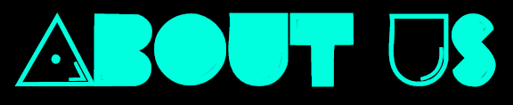
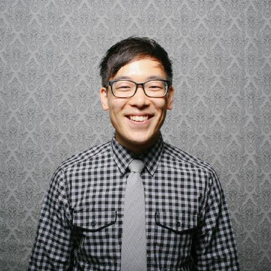
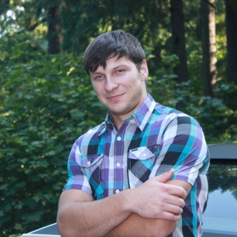

Jonah
Vitaliy
Slavik
Tim
- I'm Jonah, pronounced YoNah, I'm the wizard who invested my blood and sweat into this app. I like ice cream, rock climbing and my new obsession is coding
- You can call me V. Two things I love; CSS and fishing. I designed the start page with a couple animations. Javascript is like my wife, it takes time to figure her out.
- I am the one, who is responsible for getting this state game idea started in frst place, made every team member work on it during Memorial Day weekend.
- My name is Tim, I love my dog and collecting old laptops. I was the second wizard behind this opperation who was in charge of js functionality